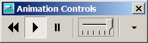

Use the tools on the Animation Controls palette to control some
aspects of the load test animation. Use the four animation
controls as follows:
Click the Play button to start or restart the animation.
Click the Pause button to temporarily halt the animation.
Click the Rewind button to reset the animation to its starting point
(prior to the point at which the load is applied to the bridge).
Move the Animation Speed slider to set the speed at which the
animation is displayed. These vary from.5km to 30km per hour.
Press the Drop Button to reveal and hide additional animation
controls.
When the additional controls are visible, check and uncheck the boxes to display and
hide of various animation features. The state of the check boxes will be "remembered" between
sessions with the BD. Change them at any time.
Shadows controls whether the sun casts shadows within the simulated
scene.
Sky controls whether the sky is drawn using a realistic graphic that
includes clouds, sun, and hills in the distance or a simple blue background.
Terrain controls whether the ground and water around the bridge are
drawn.
Abutments controls whether the bridge abutments and road surfaces
are drawn.
Colors controls whether are depicted with colors. If the box is checked, is represented by red and by blue as the moves over the bridge deck. Otherwise a flat gray is
used.
Erosion controls whether the terrain color is adjusted to depict
soil erosion on steep slopes. Note the some computers do not properly draw eroded terrain
due to bugs in graphics card drivers. If the terrain is strangely colored or
disappears when Erosion is checked, just keep this control in
the unchecked state.
Exaggeration controls whether member deflections are exaggerated to
make them more visible. When unchecked, the animation is realistic. When checked,
changes in the shape of the truss under load are multiplied by 20 in order to make them
more visible.
Truck controls whether the cartoon of the truck loading is shown or
hidden.
Some of these options are missing or modified if Old Style graphics have been selected.
The Animation Controls palette is normally displayed whenever you load test your design. The palette is automatically hidden when
you return to the Drawing Board. If you manually close
the controls, you can make it visible again with the View Animation Controls button.
When you initiate the , the Play button is automatically depressed.
When you pause, you must use the Play button to restart it.
The smoothness of the animation depends on the speed of your computer's processor and
graphics system. If the motion looks too "jerky," try turning off some of the
animation features. Turning off Shadows is likely to have the greatest effect.